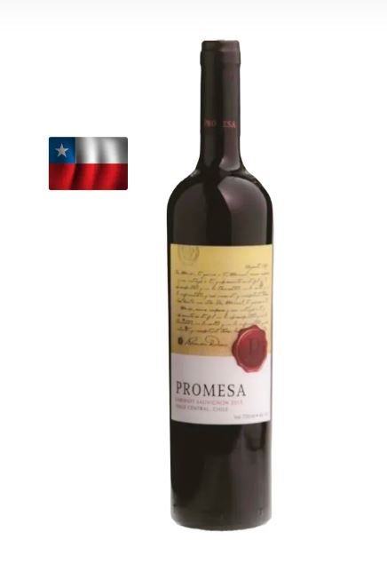
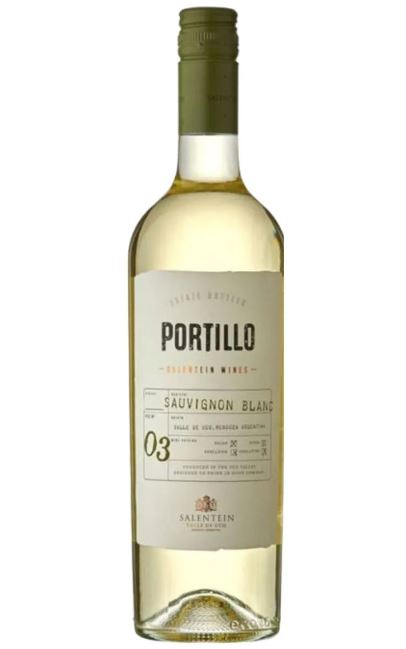
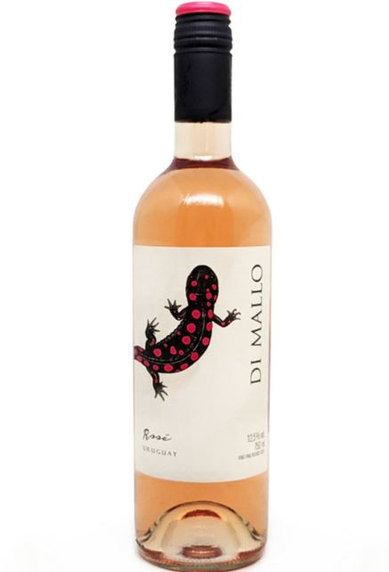
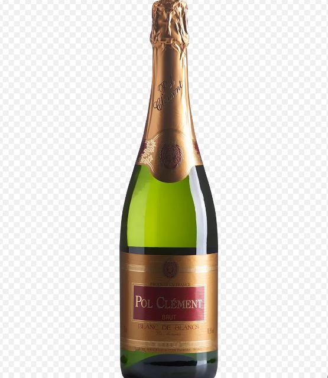
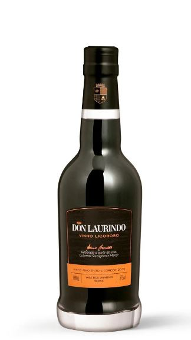

Abaixo temos um vinho tinto Chileno. O tipo de vinho mais consumido no brasil
e produzidos por meio da fermentação do suco extraído de uvas tintas. Abaixo temos um vinho branco Argentino. O vinho branco pode ser produzido a partir de uvas brancas e tintas,
com método de produção distinta ao do vinho tinto. Abaixo temos um vinho rosé Uruguaio. Ele é produzido a partir de
uvas tintas por diferentes tipos de vinificação. Abaixo temos um espumante Francês. Ele é um tipo de vinho produzido com gás carbônico dissolvido.
Abaixo temos um vinho licoroso Brasileiro. Eles são produzidos por uvas brancas e tintas.
